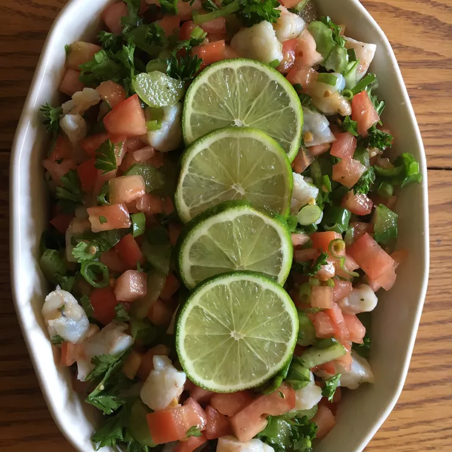

Ceviche

Description
Fresh scallops are completely immersed in lime juice for a few hours; mix in chopped tomatoes, green onions, celery, bell pepper, and cilantro just before serving. You can use fresh shrimp or small chunks of white fish like halibut if you prefer. Serve the ceviche in fancy cocktail glasses with lime wedges.
Ingredients
- 1 pound bay scallops
- 8 limes, juiced
- 2 stalks celery, sliced
- 2 tomatoes, diced
- 1/2 green bell pepper, minced
- 5 green onions, minced
- 1/2 cup chopped fresh parsley
- 1/8 cup chopped fresh cilantro
- 1 1/2 tablespoons olive oil
- freshly ground black pepper to taste
Steps
- Rinse scallops and place in a medium bowl. Pour lime juice over scallops; scallops should be completely immersed in lime juice. Cover and chill in the refrigerator until scallops are opaque, 8 hours to overnight.
- Discard 1/2 of the lime juice from the bowl. Add celery, tomatoes, bell pepper, green onions, parsley, cilantro, olive oil, and black pepper; stir gently until combined.
Tips
You may substitute many types of seafood for scallops: for example, halibut, red snapper, flounder, or swordfish.